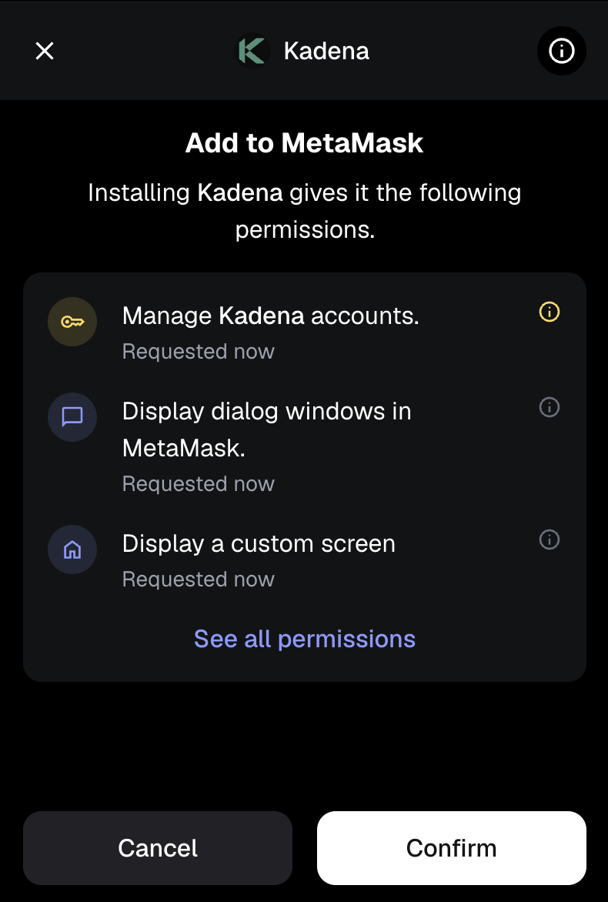

Kadena Snap User Guide
This guide walks you through the steps to connect your MetaMask wallet to the Kadena Snap, install it, approve permissions, and perform basic operations like switching networks and sending $KDA.
1. Connect to Kadena Snap
When visiting a dApp that uses Kadena Snap, you’ll be prompted to connect your MetaMask wallet.

Your Kadena account will be derived from your MetaMask Secret Recovery Phrase.
2. Approve the Connection Request
MetaMask will display a connection request, asking you to approve the origin (e.g., http://localhost:8080).

Click "Conectar" (or "Connect") to proceed.
3. Approve Permissions to Add Snap
You’ll now be asked to install the Kadena Snap, which includes requesting permissions:
- Manage Kadena accounts
- Display dialog windows in MetaMask
- Display a custom screen

Click "Confirmar" to continue.
4. Confirm Final Permissions
MetaMask may show a final prompt to "Proceed with caution", requesting permission to manage your Kadena accounts.

Check the box to Install Kadena and click Confirmar to proceed.
5. Snap Installed Successfully
Once installed, MetaMask will display confirmation that the Kadena Snap is ready to use.

Click OK to return to the dApp.
6. Switch to Kadena Network (Optional)
If the dApp requires you to use the Kadena Testnet, you’ll be prompted to approve the network switch.

Click Aprovar (Approve) to allow switching to the testnet.
7. Fund Your Account (Using Faucet)
To perform any transaction, your new account needs $KDA. Use the official faucet:
üîó Kadena Faucet
Once funded, you’ll see a screen like this while a transaction is being processed:

8. Sending KDA
After funding your account, you can send $KDA to other accounts or perform cross-chain transfers using the Snap interface.

- From Account: Your Kadena address
- To account: Recipient address
- To chain: Select destination chain (e.g., Chain 1–20)
- Amount: Amount of $KDA
- Gas Fee: Usually prefilled
Click Send to broadcast your transaction.
Done!
You're now ready to interact with Kadena natively from MetaMask via the Kadena Snap. üöÄ